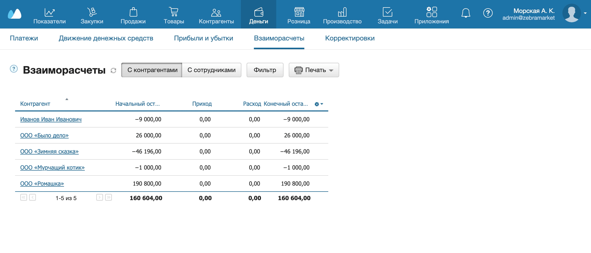

Отчеты и списки документов можно получать на электронную почту — чтобы ежедневно следить за показателями, не заходя в МойСклад. Например, так удобно просматривать отчеты по взаиморасчетам, движению денежных средств, списки приемок, отгрузок, счетов, платежей или заказов.
Рассмотрим на примере отчета Взаиморасчеты.
- Перейдите в раздел Деньги → Взаиморасчеты.
- Нажмите вверху на кнопку Печать и выберите в выпадающем списке Настроить… Откроется панель настройки шаблонов.
- Нажмите на ссылку Авто в строке Взаиморасчеты.
- Поставьте флажок в строке Автоматически формировать отчет. Укажите время формирования отчета и адрес, на который его нужно отправлять.

Автоформирование отчетов работает в том числе для шаблонов, которые вы добавили в МойСклад вручную.